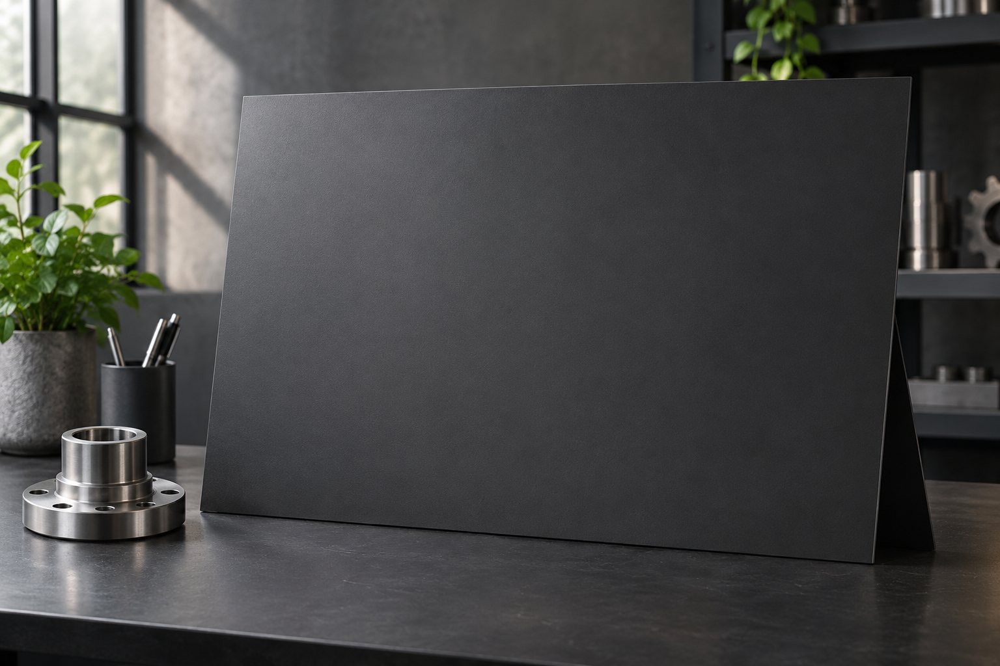
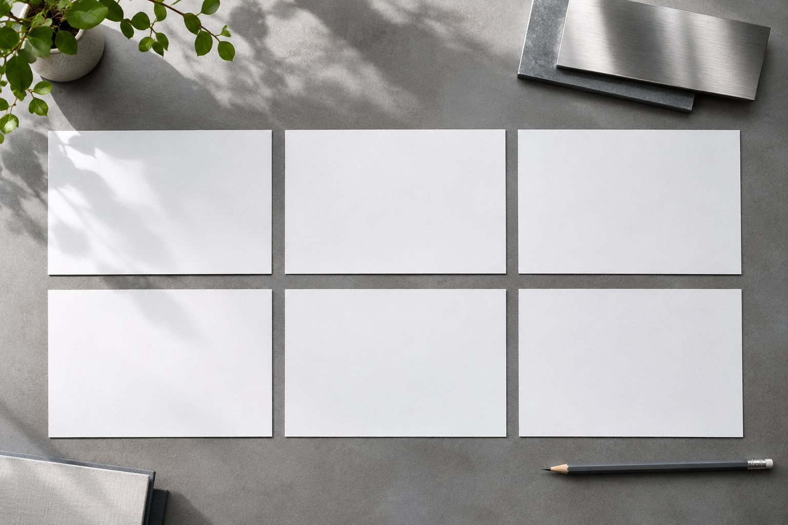
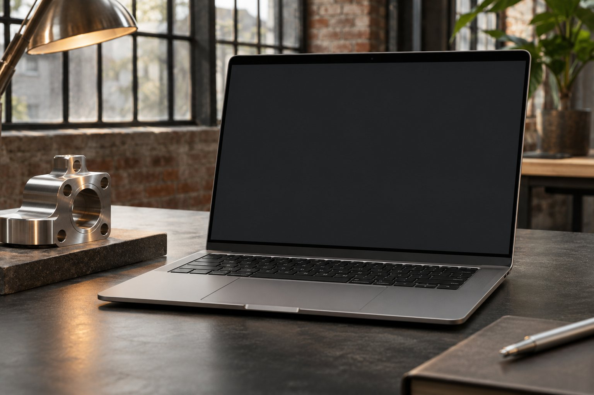

Промышленное B2B / кейс-концепт
Продукт понятен с первых слайдов
Собрать предложение вокруг задачи покупателя.

Задача
У условного производителя есть фотографии, технические описания и длинный рассказ о компании. Закупщику сложно быстро понять, какое решение ему предлагают и что потребуется для расчёта. Перестраиваем материалы в короткую последовательность: задача, продукт, условия, следующий шаг.
Что сделали

Разбираем аудиторию
Уточняем, кому показывают материал и какое решение ждут.
Собираем сценарий
Отделяем аргументы от справочной информации.
Верстаем слайды
Работаем с фотографиями, таблицами и читаемой иерархией.
Готовим передачу
Проверяем PDF и редактируемый файл, оставляем правила обновления.
Предложение, удобное для обсуждения

Финальный носитель: презентация для встречи и отправки.
Структура, макеты слайдов, PDF для отправки и редактируемый исходник в согласованном формате. Факты и характеристики подтверждаются заказчиком.
Фрагмент слайда / пример
Демонстрационный фрагмент, не рабочая документация.
| Узел подачи | Содержание |
|---|---|
| Задача производства | Подобрать узел под условия линии |
| Предлагаемое решение | Компоновка и границы поставки |
| Для расчёта | Среда, температура, присоединение |
| Следующий шаг | Согласовать исходные параметры |
Этапы и срок
3–7 дней — ориентир, зависит от материалов
- Интервью и материалы
- Структура и сценарий
- Дизайн и правки
- PDF и исходник
Ориентир по стоимости
15 000–35 000 ₽
15 000 ₽ — ориентир для презентации на 15 слайдов; расширенный визуальный пакет — до 35 000 ₽. Это страница кейса, а не готовый файл презентации.
Итоговый состав, срок и стоимость фиксируем после разбора исходных данных.